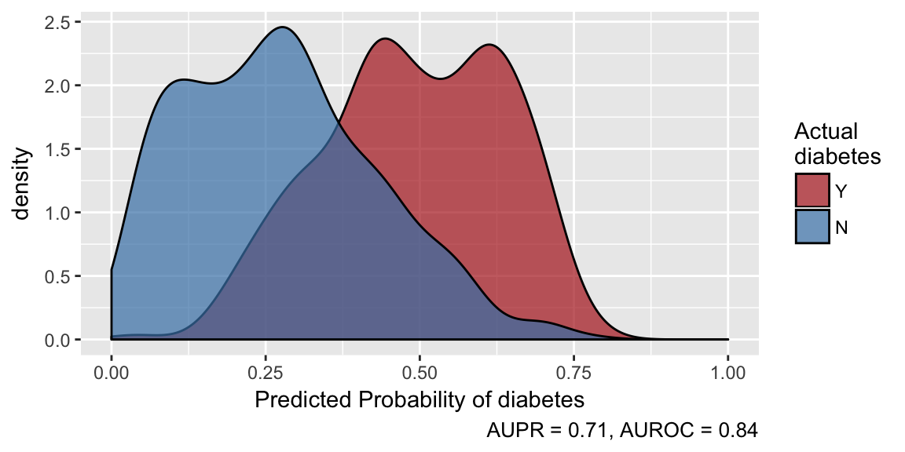

Overview
The aim of healthcareai is to make machine learning in healthcare as easy as possible. It does that by providing functions to:
- Develop customized, reliable, high-performance machine learning models with minimal code
- Easily make and evaluate predictions and push them to a database
- Make data cleaning, manipulation, imputation, and visualization as simple as possible
Usage
healthcareai can take you from messy data to an optimized model in one line of code:
models <- machine_learn(pima_diabetes, patient_id, outcome = diabetes)
models
# > Algorithms Trained: Random Forest, eXtreme Gradient Boosting, and glmnet
# > Model Name: diabetes
# > Target: diabetes
# > Class: Classification
# > Performance Metric: AUROC
# > Number of Observations: 768
# > Number of Features: 12
# > Models Trained: 2018-07-11 22:10:23
# >
# > Models tuned via 5-fold cross validation over 10 combinations of hyperparameter values.
# > Best model: Random Forest
# > AUPR = 0.72, AUROC = 0.85
# > Optimal hyperparameter values:
# > mtry = 4
# > splitrule = extratrees
# > min.node.size = 15Make predictions and examine predictive performance:

Learn More
For details on what’s happening under the hood and for options to customize data preparation and model training, see Getting Started with healthcareai as well as the helpfiles for individual functions such as ?machine_learn, ?prep_data, and ?tune_models.
Documentation of all functions as well as vignettes on various uses of the package are available at the package website: https://docs.healthcare.ai/.
Also, be sure to read our blog and watch our broadcasts to learn more about what’s new in healthcare machine learning and how we are using this toolkit to put machine learning to work in real healthcare systems.
Get Involved
We have a Slack community that is a great place to introduce yourself, share what you’re doing with the package, ask questions, and troubleshoot your code.
Contributing
If you are interested in contributing the package (great!), please read the contributing guide, and look for issues with the “help wanted” tag. Feel free to tackle any issue that interests you; those are a few issues that we feel would make a good place to start.
Feedback
Your feedback is hugely appreciated. It is makes the package work well and helps us make it more useful to the community.
Both feature requests and bug reports should be submitted as Github issues.
Bug reports should be filed with a minimal reproducable example. The reprex package is extraordinarily helpful for this. Please also include the output of sessionInfo() or better yet, devtools::session_info().
Legacy
Version 1 of healthcare-ai has been retired. You can continue to use it, but its compatibility with changes in the R ecosystem are not guaranteed. You should always be able to install it from github with: remotes::install_github("HealthCatalyst/healthcareai-r@v1.2.4").
For an example of how to adapt v1 models to the v2 API, check out the Transitioning vignettes.